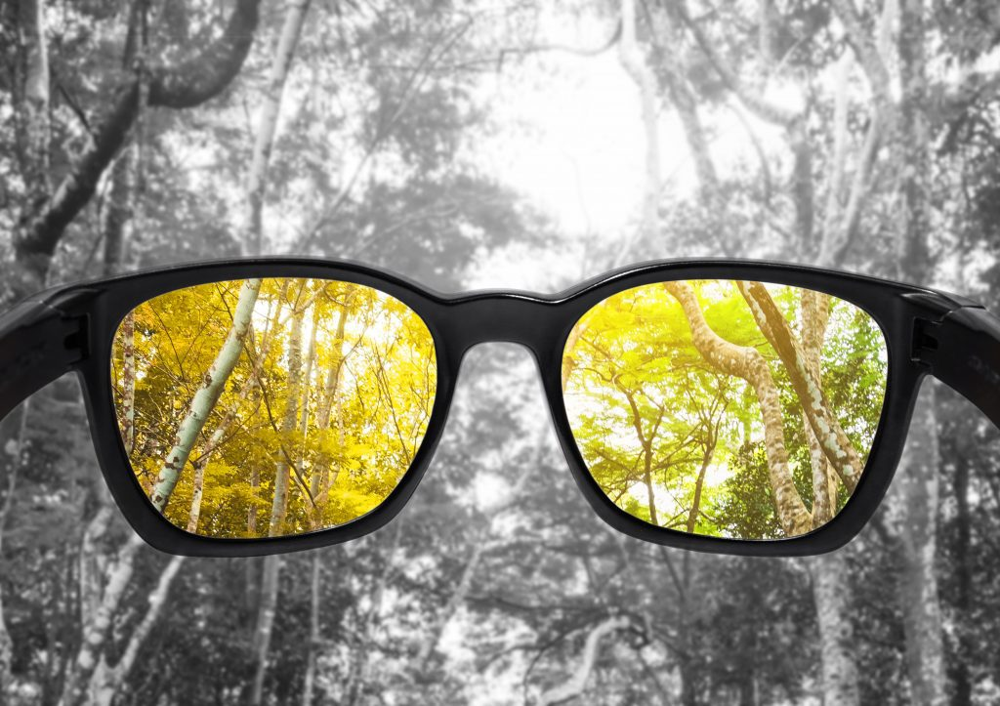
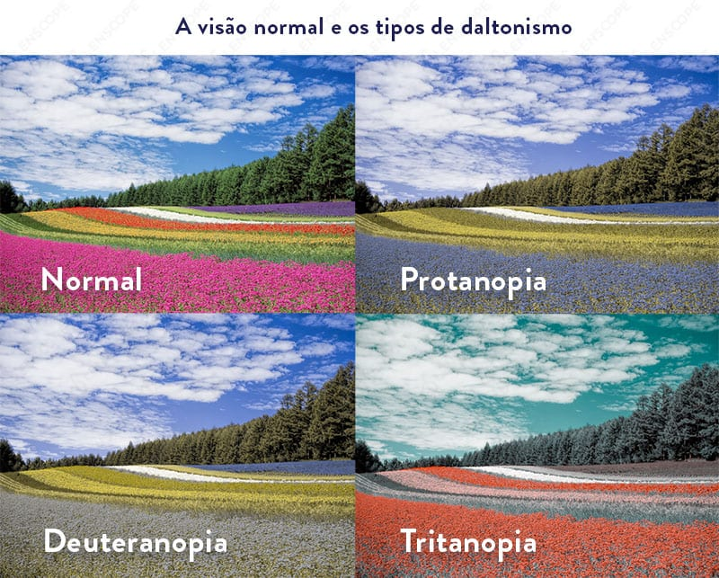
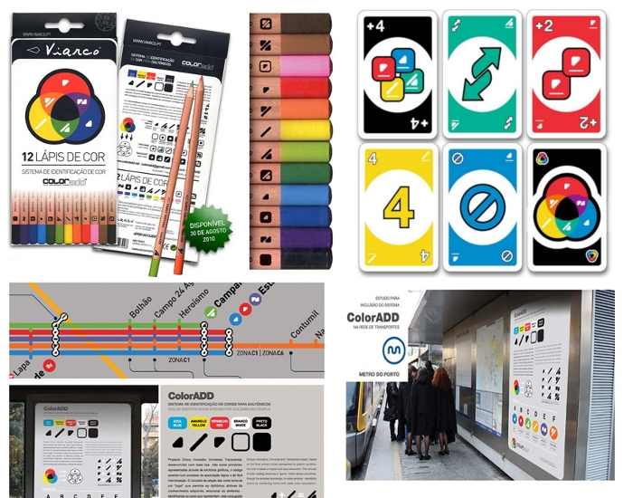

O que é?
O daltonismo é uma condição oftalmológica caracterizada pela dificuldade ou incapacidade de distinguir certas cores. Esta condição foi descrita pela primeira vez pelo cientista e químico britânico John Dalton, no final do século XVIII. Desde então, têm sido feitos progressos significativos na compreensão do daltonismo, incluindo pesquisas sobre suas causas, sintomas e possíveis tratamentos.
Causa e Principais características:
A causa exata do daltonismo ainda não é totalmente compreendida, mas é geralmente atribuída a uma anomalia genética que afeta os cones da retina responsáveis pela percepção das cores. Essa anomalia pode ser hereditária e está ligada ao cromossomo X. As principais características do daltonismo incluem:
1. Dificuldade em distinguir certas cores, especialmente vermelho e verde, ou azul e amarelo.
2. Percepção das cores alterada, podendo ver cores de forma mais desbotada ou com tonalidades diferentes.
3. Variação na gravidade dos sintomas, podendo ser leve, moderada ou grav

Início de sintomas e problemas:
A causa exata do daltonismo ainda não é totalmente compreendida, mas é geralmente atribuída a uma anomalia genética que afeta os cones da retina responsáveis pela percepção das cores. Essa anomalia pode ser hereditária e está ligada ao cromossomo X. As principais características do daltonismo incluem:
Muitas vezes, o daltonismo está associado a desafios específicos, como dificuldades na identificação de sinais de trânsito, mapas de cores, e em certas profissões que exigem distinção precisa de cores, como piloto, eletricista ou designer gráfico.
Causas do daltonismo:
Doenças: Catarata, glaucoma, diabetes, Parkinson, Alzheimer e Esclerose Múltipla, podem causar o desenvolvimento do daltonismo, devido a pressão no nervo óptico e também danos na retina;
Remédios: O antibiótico etambutol e medicamentos antipsicóticos, podem causar alteração nas cores da visão, devido a pressão causada no nervo óptico;
Envelhecimento: Devido o enfraquecimento da visão e o desgaste dos músculos oculares a perda da visão das cores pode ocorrer gradualmente com o envelhecimento. Porém nem sempre a envelhecimento natural afeta as cores da visão.
Dicas de cuidados para pessoas com daltonismo:
Conscientização: É importante que o indivíduo esteja ciente de sua condição de daltonismo e entenda suas limitações visuais.
Iluminação adequada: Garanta que os ambientes estejam bem iluminados para facilitar a distinção de cores.
Utilização de contraste: Em situações onde a identificação de cores é crucial, como na seleção de roupas, opte por peças com contrastes nítidos.
Etiquetagem: Rotular objetos com cores pode ajudar a identificá-los mais facilmente, especialmente em ambientes de trabalho ou em casa.
Exercícios/brincadeiras para pessoas com daltonismo:
Jogos de quebra-cabeça: Estimulam a concentração e a resolução de problemas, independentemente das cores.
Atividades ao ar livre: Caminhadas, passeios de bicicleta ou jardinagem podem ser formas relaxantes de aproveitar o tempo fora de casa, sem depender fortemente da distinção de cores.
Jogos de tabuleiro: Jogos como xadrez, damas e outros que não dependem da identificação de cores podem ser bastante divertidos e desafiadores.
Leitura: Incentive a leitura de livros e revistas, focando mais na compreensão do texto do que na interpretação das cores das imagens.
Jogos digitais acessíveis: Existem aplicativos e jogos para dispositivos eletrônicos projetados com interfaces amigáveis para pessoas com daltonismo, que podem ser uma opção divertida e inclusiva.
Lembre-se sempre de adaptar as atividades às necessidades individuais e preferências de cada pessoa com daltonismo.

Tratamento :
Atualmente, não há cura para o daltonismo, mas existem algumas abordagens que podem ajudar os afetados a lidar com a condição:
1. Óculos ou lentes de contato com filtros especiais podem ajudar a melhorar a distinção entre certas cores.
2. Terapia de visão pode ser útil para desenvolver estratégias de compensação e habilidades de discriminação de cores.
3. Educação e conscientização sobre a condição podem ajudar os indivíduos a adaptar seu ambiente e aprender a lidar com os desafios associados ao daltonismo.